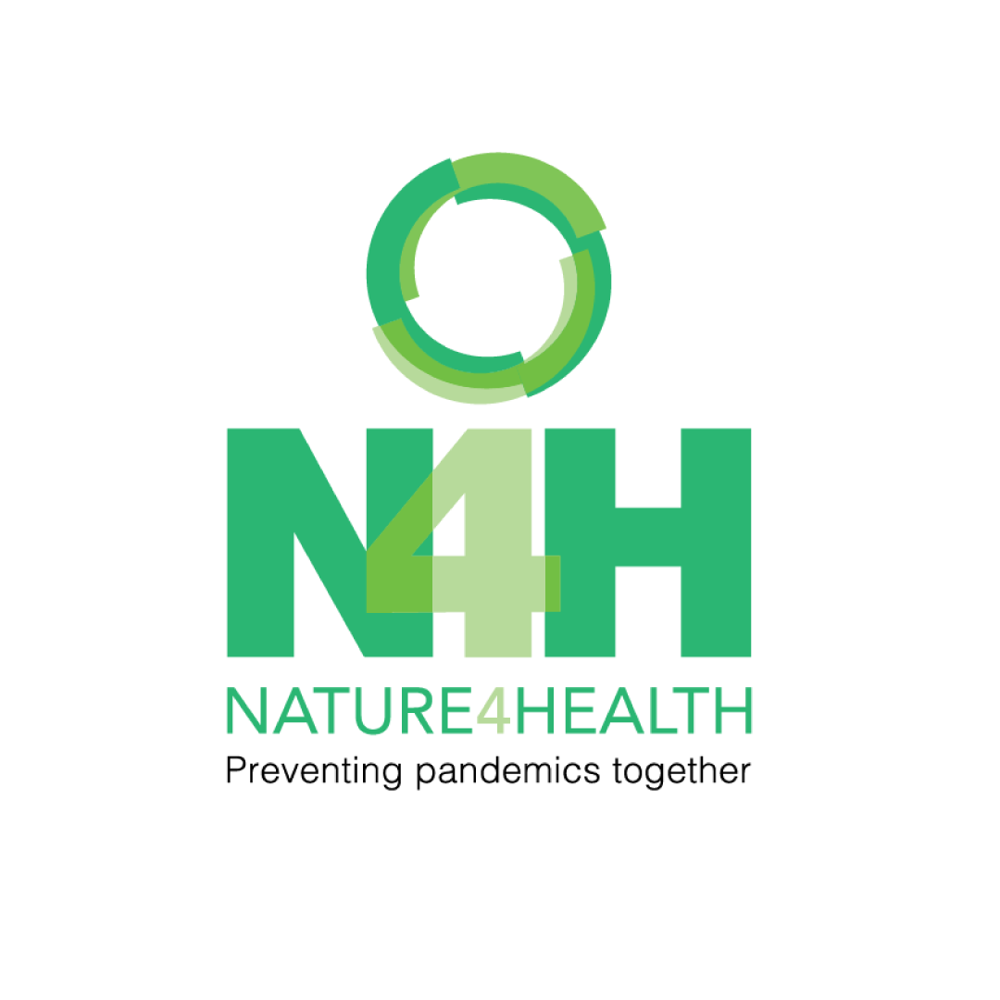

Nature for Health
Website Redesign Proposal v2
A simplified visual briefing outlining two distinct options for stakeholders to align N4H's digital infrastructure with its global mission.
Your website is your primary
global communication hub.
Nature for Health operates at the critical, growing intersection of biodiversity, environmental sustainability, and public health.
This proposal addresses four key opportunities to significantly strengthen the N4H digital platform:
Option 1:
Refine & Improve
A modernized, streamlined version of the current website built on a robust foundation.
Option 2:
Fresh New Look
A bold, complete redesign of the N4H experience prioritizing visual narrative.
What This Direction Delivers
- Familiar to existing users & partner institutions
- Lower learning curve for N4H internal staff
- Significantly easier to maintain and update daily
- Lower technical risk and faster deployment
- Preserves established N4H communication equity
If N4H wants to improve what already works while creating a stronger, cleaner operational foundation for future growth.
Reference Benchmarks
These models illustrate clean and structured layouts, easy navigation, and strong institutional credibility:
Nature for Health
Current Website (Foundation)
David Shepherd Wildlife
Clear structured fundraising and advocacy
Wildlife Coexistence
Clean layout of complex technical guidelines
Erlebnis Unganisha
Sleek institutional presentation & resources
Fresh New Look
A complete redesign of the N4H digital experience.
This approach reimagines how N4H presents its work online. Rather than simply improving the existing website, we create a more modern, engaging, and memorable experience that better communicates the importance of the Nature-Health connection.
The focus is on making N4H stand out as a global leader in the One Health space.
What This Direction Reimagines
- Creates a leading, modern global presence
- Helps N4H stand out from similar initiatives
- Better communicates real-world outcomes and impact
- Encourages deeper content exploration and learning
- Builds strong backing for global advocacy campaigns
If N4H wants to reposition itself with a bolder, highly visual, and modern digital identity.
Reference Benchmarks
These models illustrate creative visual storytelling, emotional connection, and high public impact:
Carbon Direct
Premium dark grids and slick micro-interactions
Following Wildfire
Highly cinematic, media-rich editorial layouts
Wildlife LA
Stunning typography & community-oriented maps
Sydney Lakes
Modern layouts, smooth parallax and shapes
Nzon Foot
Immersive, visual nature explorations
The Redesign Focuses on Structure,
Preserving the N4H Brand Identity
Regardless of the direction selected, the redesign will continue to follow existing N4H brand guidelines, logo standards, and approved color palettes.

Light Background VersionA Balanced, Hybrid Approach
A balanced approach that keeps the trust and familiarity of the current N4H website while introducing selected elements from the Fresh New Look approach where they can strengthen storytelling, engagement, and visibility.
Refine & Improve
Navigation structure, modern CMS, fast page load speeds, and rock-solid SEO architecture.
Fresh New Look
Cinematic case study blocks, emotional visual assets, dynamic layouts, and campaign hubs.
This recommendation is usually the easiest for stakeholders to align around because it feels practical rather than radical.
Implementation Roadmap
Click on any step below to expand key deliverables and objective descriptions:
Timeline: Weeks 1 - 2
Timeline: Weeks 3 - 4
Timeline: Weeks 5 - 7
Timeline: Weeks 8 - 10
Timeline: Weeks 11 - 14
Ready to elevate N4H's digital presence?
Let's align on a unified, high-impact direction.